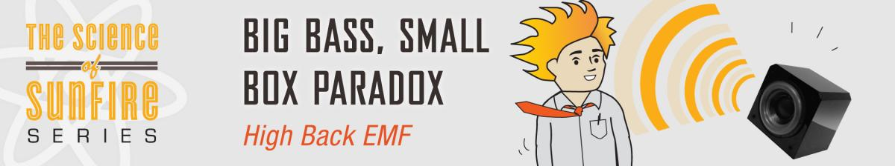
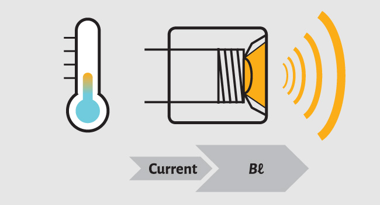
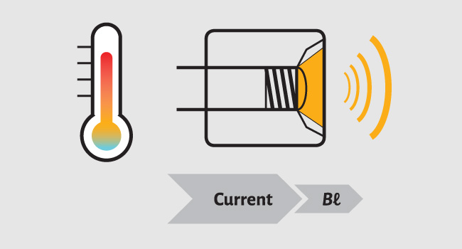
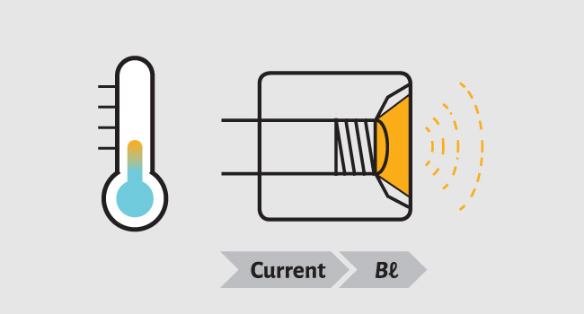
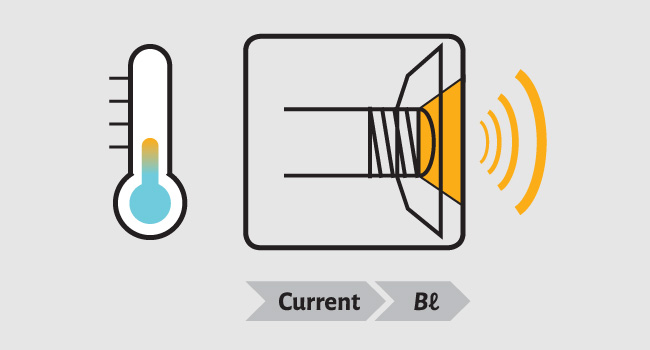

The Science of Sunfire
Massive deep bass from a cabinet not much larger than the woofer itself.
Sunfire's High Back-EMF Technology allows the production of massive amounts of deep bass from a cabinet that is not much larger than the actual woofer itself. The challenge is, it's not possible to build a small box subwoofer with large amounts of bass output and extension with a conventional driver.
So Sunfire had to first greatly increase the input power... by a factor of 10 or more. Two hundred watts becomes 2,000 watts (enter the Sunfire Tracking Downconverter amplifier).
To handle that type of power, custom drivers had to be designed with oversized magnets and voice coils that would allow for a huge amount of Xmax — the measurement of the distance that a speaker can move linearly in one direction from rest.
The accumulation of all of these factors yields Sunfire's High Back-EMF Design. The absolute most amount of bass from the smallest subwoofers imaginable.
The Challenge
In speaker design you can have two of the following three attributes, but NOT all three:
In a big box solution, you have lots of air inside the cabinet so it doesn't take much force to compress it.

Sunfire is about small boxes, but you can't approach a small box with the same force and driver as in a big box design.

So just add force, right? Wrong. Boosting the current – and nothing else – causes the voice coil in a conventional driver to overheat.

To achieve high Bℓ, we changed the geometry of the woofer.

Sunfire's subwoofers are Little, Low and Loud, delivering big BIG bass from enclosures not much bigger than the woofers themselves.